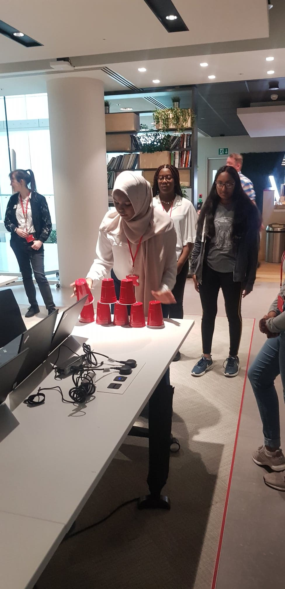
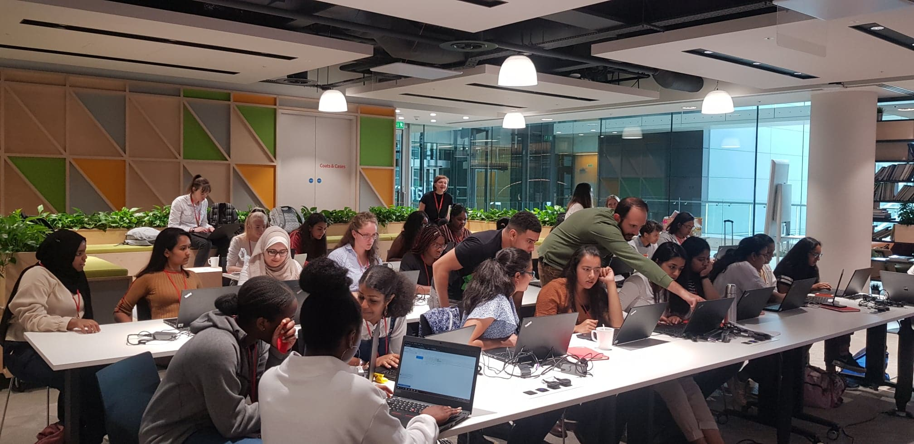
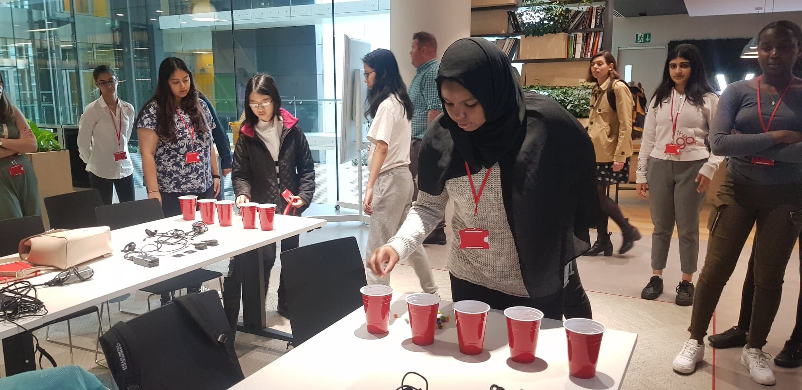
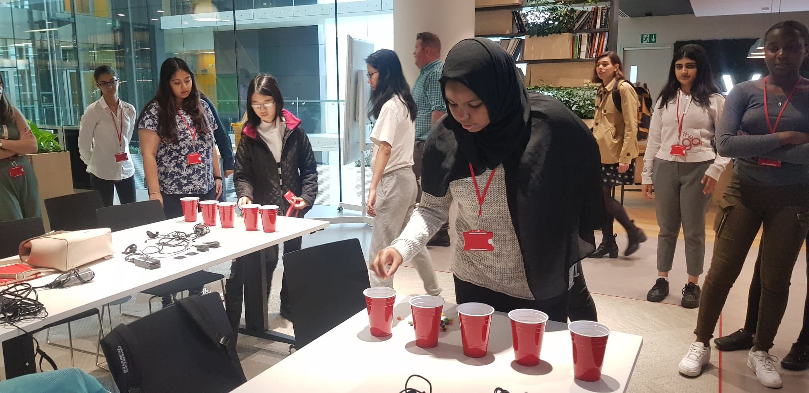

On Day 2, we learnt more about CSS and UX and UI. CSS by now seemed fairly straightforward as the trainers where very through in their explanation and made it very easy for all of the girls to understand no matter your skill level. You write some CSS, tweak it here and there until it looks the way you want, and you’re done! In theory that is exactly how CSS is meant to work and why it is brilliant because it is very simple to use when you get a grasp on it.
As designs get more and more complex, for larger and larger sites - you will need to write more and more CSS code. For simple designs like navbar, tables and modals, lots of other people will have written CSS to create them on their website, so it is counter-productive for everyone to write their own version. About 5 years ago, ‘all’ you would have had to worry about is the cross-browser display issues. Since then, the mobile web has exploded and you have another. We also had another ice breaker game which was great fun as now we were more comfortable with each other and even created our own Spotify playlist to play in the background while we worked on our website.


 
